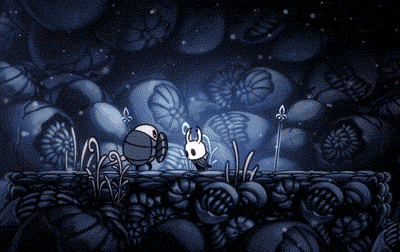
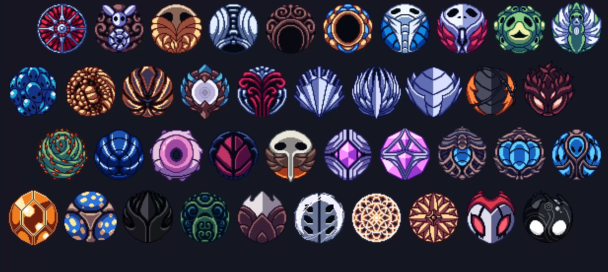
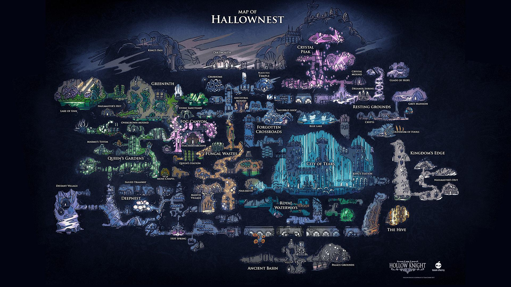

Gameplay
Hollow Knight é um jogo de ação e aventura em estilo metroidvania 2D que se passa em Hallownest, antigo reino fictício. O jogador controla um silencioso receptáculo enquanto explora um mundo subterrâneo. O cavaleiro utiliza uma arma pontiaguda (chamada de ferrão), tanto em combate quanto para interação com o ambiente.

Na maior parte das áreas do jogo, insetos hostis podem ser encontrados juntos com outras criaturas. Combates geralmente envolvem usar a arma para eliminar os inimigos em curto alcance, mas o jogador eventualmente aprende algumas magias que permitem combate à distância. Inimigos derrotados deixam cair uma moeda chamada Geo. O cavaleiro começa com um número limitado de máscaras (5 máscaras), que representam os pontos de vida do jogo, e pedaços de máscara podem ser coletados para formar máscaras completas que aumentam a vida máxima do jogador.Ao atingir inimigos, o cavaleiro coleta Alma, que é guardada em um Receptáculo de Alma, e pode ser usada para se curar ou para lançar magias. Quando todas as máscaras se quebram, o cavaleiro morre e a Sombra aparece no local, o jogador perde toda Geo que possuía e passa a carregar uma quantidade limitada de Alma, sendo forçado a derrotar a Sombra para poder pegar seus Geos de volta e recuperar o máximo de Alma. O jogo utiliza bancos espalhados pelo reino como pontos de salvamento, onde restauram sua vida por completo e lhe dão a opção de mudar seus amuletos. Inicialmente, o jogador pode utilizar Alma apenas para regenerar vida, mas posteriormente aprende novas magias que também consomem Alma.

O jogo também utiliza Amuletos, onde sua função é de dar habilidades especiais ao jogador. Para equipar e/ou remover amuletos, terá que estar sentado em um banco. Amuletos podem ser obtidos por 2 formas diferentes: encontrando-os no mapa ou comprando eles em certas lojas. O Cavaleiro precisará de uma certa quantidade de encaixes para equipar amuletos, e os encaixes podem também ser encontrados pelo reino de Hallownest ou podem ser comprados em certas lojas (o Cavaleiro começa com 3 encaixes e 0 amuletos). Caso o jogador coloque um ou mais amuletos que excedam o limite de encaixes, ele terá a Sobrecarga, que fará com que ele tome o dobro de dano quando for atacado. O jogo possui um total de 40 amuletos e de 11 encaixes.

Muitas áreas apresentam inimigos mais desafiadores e chefes que o jogador pode derrotar para poder progredir. A derrota de alguns dos chefes recompensa o jogador com novas habilidades. Durante o jogo, o jogador encontra vários personagens não jogáveis (NPCs), com os quais pode interagir. Estes NPCs fornecem informações sobre a história do reino, vendem e compram itens, ou oferecem ajuda e serviços. Alguns itens fornecem habilidades necessárias para avançar na exploração do reino, como pulo duplo e escalada de parede.

Hallownest consiste de várias áreas grandes e interconectadas, com temas únicos. Com sua jogabilidade não linear, Hollow Knight não força o jogador a seguir caminhos específicos, nem exige a exploração do mundo completo, mas possui obstáculos que limitam o acesso a certas áreas, sendo assim obrigatório que o jogador encontre certos chefes ou itens para poder progredir.O jogo também oferece maneiras de se movimentar pelo reino de maneira mais rápida, incluindo uma rede de túneis, elevadores, bondes, e magia.Quando os jogadores entram em uma nova área, eles não possuem acesso ao mapa do local, precisando encontrar um NPC cartógrafo que pode vender uma versão inicial do mapa, que vai sendo progressivamente revelado conforme o jogador avança na exploração da área.